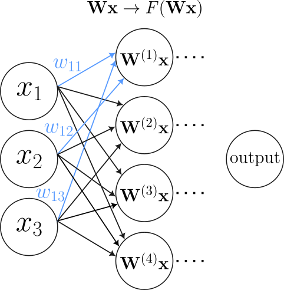
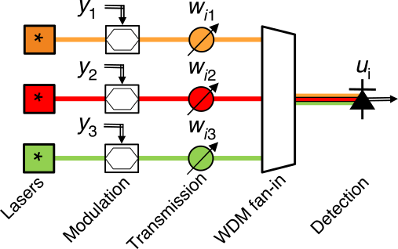
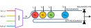
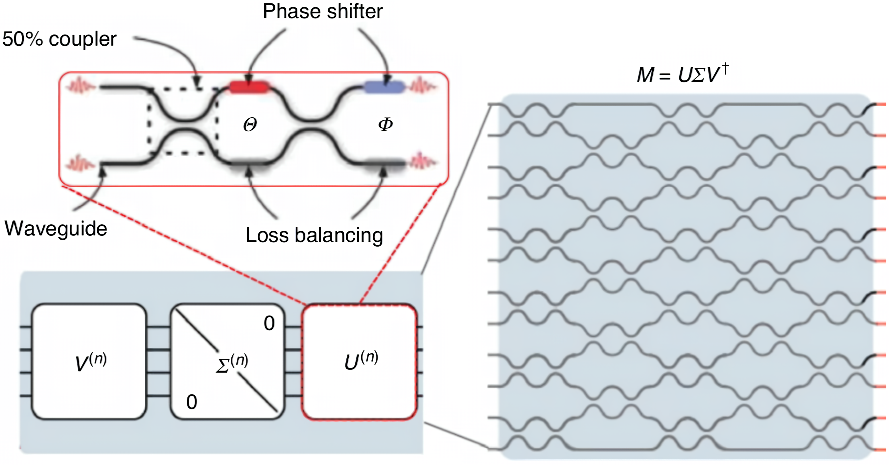
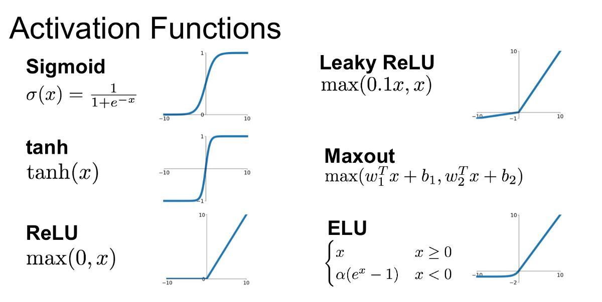
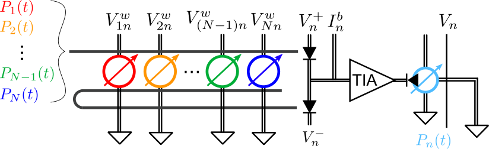
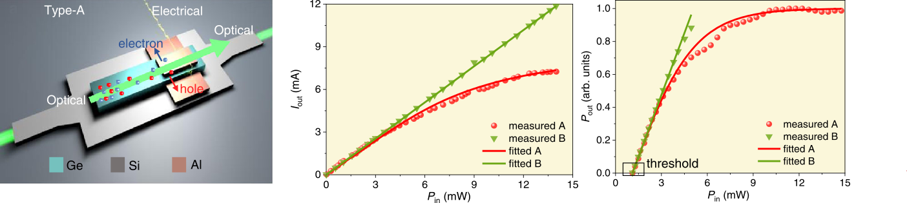

Introduction to neuromorphic photonics
2026-02-09
Neuromorphic computing is a paradigm based on ANNs, which process information in a distributed manner. This is a benefit for certain tasks—usually ones unsuited for regular computing.

Thus, the applications that benefit from neuromorphic photonics are ones that require low latency, high bandwidth and low energies (Shastri et al. 2020):
Figure courtesy of (Shastri et al. 2020)

The wavelength-based approach is typically implemented using micro ring resonators (MRRs), in the “broadcast-and-weight” architecture introduced by (Tait et al. 2016). The MRRs act as attenuators, “weighting” the signals.

As we know, MZIs can be used to implement any unitary transformation, which is not sufficient for all possible weight matrices. However, it turns out that any transformation can be implemented as the product of a diagonal matrix and two unitary matrices. Figure courtesy of (Shen et al. 2017).

O/E/O activation functions
All-optical activation functions

The implementation from (Nezami et al. 2023) uses a balanced photodetector, followed by a transimpedance amplifier to convert the photocurrent to a voltage signal. This is used to control a ring modulator, which is used to perform the E/O conversion, resulting in non-linear transmission.

Implementation from (Shi et al. 2022) is based on a Ge-Si waveguide-integrated photodetector with a shortened electrode. FCA occurs in the electrodeless region, providing the nonlinearity (no FCA in the electrode region, where carriers are absorbed instantly). FCA is intraband (i.e. generates no photocurrent), but some photocurrent is generated due to intrinsic absorption. This can be used for monitoring the power in the NN.
